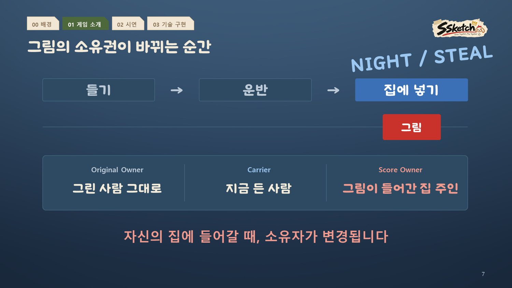
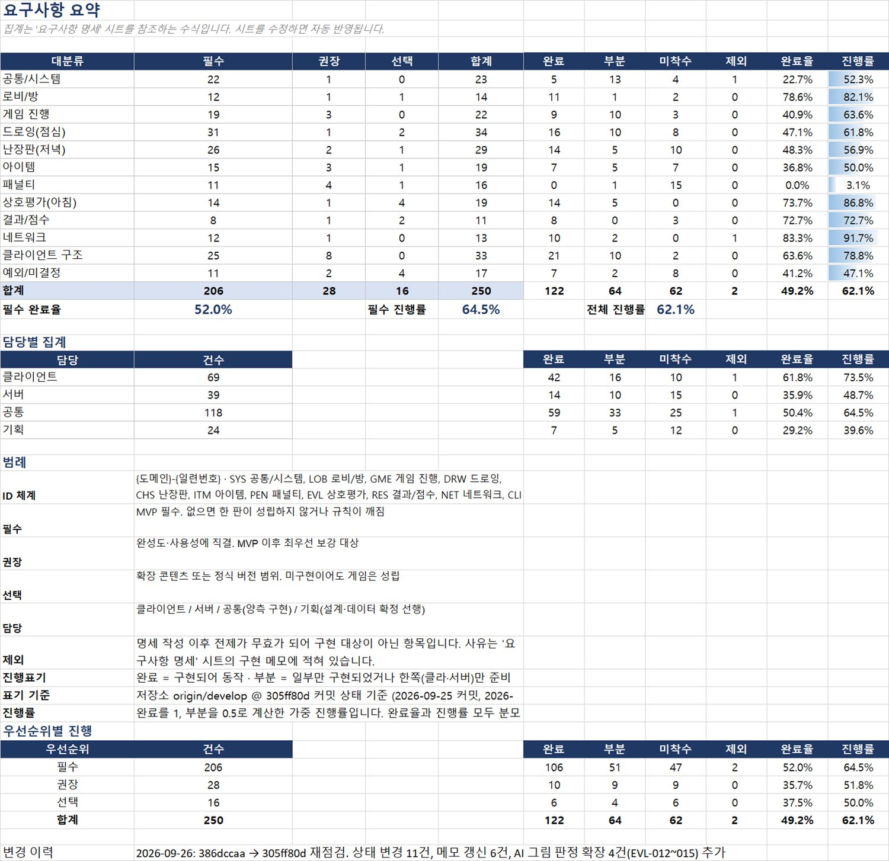
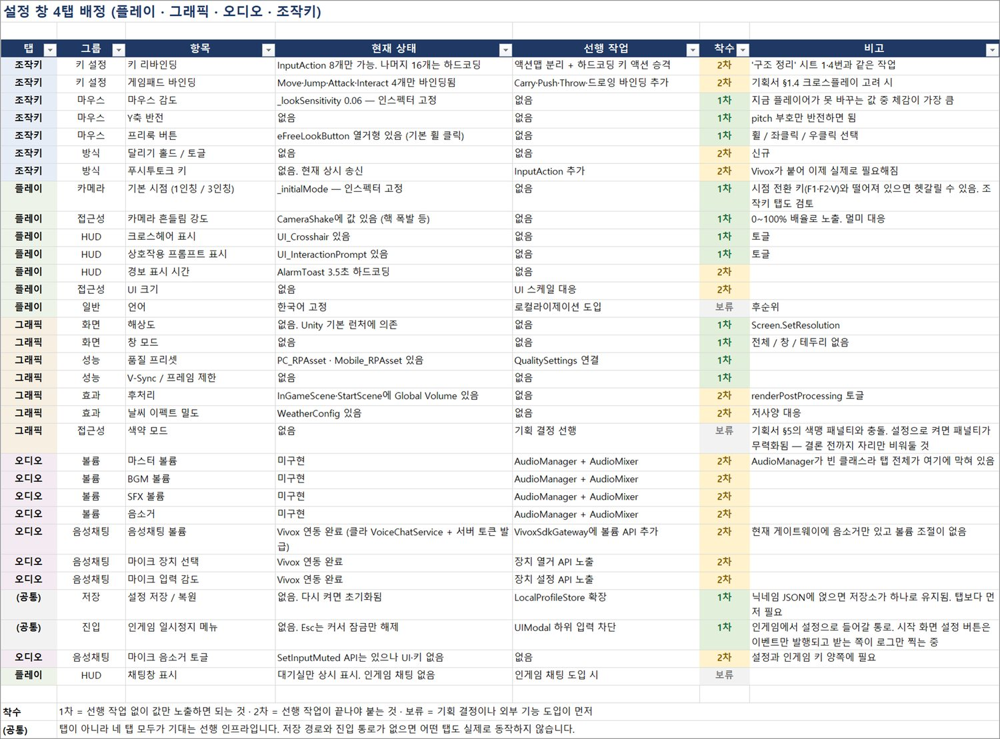

SSketch · 문서와 코드가 같은 말을 하게
기획서, 패킷 명세, 실제 코드가 따로 움직이기 쉬운 6인 멀티플레이 프로젝트였습니다.

4인 멀티플레이 파티 게임 · 6인 팀 · 2026.08–09 · 특화 프로젝트 우수상(반 3등)
그림 파티 게임은 대부분 한 사람이 그리고 나머지가 맞히는 구조라, 맞히고 나면 그림의 역할이 끝납니다. SSketch는 낮에 그린 그림을 밤에 훔치고 아침에 익명으로 평가해, 그림이 끝까지 게임의 자원으로 남습니다.
- 문제
기획서 · 패킷 명세 · 코드가 서로 다른 말을 하기 쉬운 구조
- 제약
팀이 매일 작업을 마치고 Jira에 올리는 방식 — 자동 연동보다 수동 점검이 맞음
- 결정
요구사항을 문서가 아니라 develop 코드 기준으로 다시 셈. 유명무실한 항목은 ‘제외’로 분모에서 뺌
- 문서
요구사항 250건 · 12개 대분류 ID 체계, 설정 창 프로토타입·레드라인, 디자인 컨셉북 16쪽
- 결과
진행률 62%(2026.09.26) · 담당 규칙 코드 테스트 96/96 · 특화 프로젝트 우수상
상세 기획 보기 · 규칙·수치 결정 · 소유권 원장 · 외주 사양
01요구사항을 코드 기준으로
기획서와 패킷 명세를 바탕으로 요구사항 250건을 12개 대분류 ID 체계(SYS · LOB · DRW · EVL 등)로 정리하고, 항목마다 우선순위와 담당을 붙였습니다. 8/31부터 9/26까지 develop 브랜치의 실제 코드를 보며 완료 · 부분 · 미착수를 반복해서 다시 판정했습니다.
확정 전 수치와 문서 간 충돌은 별도 시트에 모아, 결정할 것을 한곳에서 관리했습니다.


02규칙·수치 결정
| 결정 | 근거 |
|---|---|
| 운반 감속률 10% → 30% | 그림을 든 사람은 느려져야 추격이 성립합니다. 10%로는 느려진 것을 알아채지 못했습니다. |
| 한 방 기절 → 누적 게이지(100) | 맨손 10대 · 야구방망이·권총 7대 · 나머지 무기 한 방. 깨어나면 0이 아니라 50에서 시작 — 0으로 돌리면 한 번 도망친 사람을 다시 쓰러뜨리기 너무 어려워집니다. 게이지는 초당 1씩 줄어듭니다. |
| C등급 아이템 추가 | C등급이 부족하다는 판단으로 연막탄 · 섬광탄 추가를 결정했습니다 (구현은 팀원). |
| 피드백 대응 4갈래 | 발표 피드백 30여 건을 빈도순으로 세고, 지적마다 허용 / 장치 / 제작 중 / 미도입으로 답했습니다. QA 설명서에서 자세히 → |
03소유권을 원장 하나로
씬 오브젝트 참조로 흩어져 있던 소유권을 정수 ID 기반 원장으로 옮기고, 창작자 · 운반자 · 마지막 확보 집 · 상태를 기록했습니다. 모든 상태 변경이 Commit 한 곳만 지나가게 해서, 서버 동기화를 붙일 때 그 지점 하나만 연결하면 되게 했습니다. 이 구조는 AI 코딩 도구로 구현했습니다.
04규칙에서 끌어낸 외주 사양
밤에는 익명화가 핵심이므로 같은 복장과 복면으로 실루엣을 통일하고 표정은 만들지 않기로 했습니다. 이 사양으로 제안서를 직접 작성해 외부 작업자와 캐릭터 7종의 커미션 계약을 진행하고, Unity 6 · URP 셰이더와 팔레트 UV 색 지정 규칙을 담은 전달 규격을 정리했습니다.
기여 경계 — 연막탄·섬광탄 구현, 전문가 리뷰 자료, 최종 영상·트레일러, 발표는 팀원 작업입니다.